11 Le offuscazioni mentali
Śāntideva, così come tutti gli altri pensatori della tradizione buddista, propone varie strategie per tenere sotto controllo la mente e per eliminare le offuscazioni mentali (kleśa). In questo capitolo esamineremo i kleśa in relazione alla dottrina della pratītyasamutpāda (coproduzione condizionata). Il principio della coproduzione condizionata è rappresentato dalla Ruota della vita e, all’interno di tale rappresentazione, i kleśa sono ciò che “avvelena” il ciclo delle rinascite. Tra gli antidoti alla sofferenza, qui ci soffermeremo su kṣānti (tolleranza, pazienza) che viene discussa nel sesto capitolo del Bodhicaryāvatāra.
11.1 I kleśa
I kleśa, nel buddismo, sono stati mentali che offuscano la mente e si manifestano in azioni malsane. Il termine kleśa viene tradotto come: afflizioni, contaminazioni, emozioni distruttive, emozioni disturbanti, emozioni negative, veleni mentali, nevrosi ecc. Nelle tradizioni buddiste, i tre kleśa di
- moha: nescienza (avidyā),
- rāga: attaccamento al mondo, desiderio, lussuria,
- dveṣa: avversione, rabbia, odio (l’opposto di raga)
sono identificati come la fonte di tutti gli altri kleśa. Nel Mahayana sono indicati come “i tre veleni” (triviṣa). Nelle tradizioni buddiste si crede che i tre veleni siano la causa delle malattie sia fisiche che mentali. Ghesce Tashi Tsering afferma:
Secondo il buddismo, anche la salute fisica è legata agli stati mentali. Quindi le vere minacce al nostro benessere sono attaccamento, avversione e nescienza: le tre offuscazioni mentali fondamentali che portano a tutte le altre afflizioni, sia mentali che fisiche.
11.2 Il principio della coproduzione condizionata
La sofferenza, come tutte le cose, ha una causa, un’origine, la quale si basa su una legge inderogabile, la cosiddetta coproduzione condizionata (pratītyasamutpāda). L’individuazione del ciclo di cause che vanno rimosse per giungere al nirvana è un punto centrale della pratica buddhista. Nel Pratītyasamutpāda-sutra si afferma:
Qual è il principio della coproduzione condizionata? Il fatto che essendoci questo c’è quello, dalla nascita di questo nasce quello; cioè a dire, condizionati dalla nescienza si producono i coefficienti, condizionata dai coefficienti si produce la conoscenza, condizionato dalla conoscenza si produce nome e forma, condizionate da nome e forma si producono le sei sedi, condizionato dalle sei sedi si produce il contatto, condizionata dal contatto si produce la sensazione, condizionata dalla sensazione si produce al brama, condizionata dalla brama si produce l’appropriazione, condizionato dall’appropriazione si produce il divenire, condizionata dal divenire si produce la nascita, condizionati dala nascita si producono vecchiezza, morte, sofferenza, lamenti, dolore, scoramento e afflizioni. E così si ha la nascita di tutta questa grande massa di dolore. Questo è il cosideto principio della coproduzione condizionata.
Il principio della pratītyasamutpāda per molti aspetti è alla base della comprensione buddista di come funziona il cosmo. Come ha affermato il Buddha, “Colui che vede la coproduzione condizionata vede il Dharma; colui che vede il Dharma vede la coproduzione condizionata”.
11.3 La ruota dell’esistenza
La legge causale generale della coproduzione condizionata, ovvero il ciclo delle cause ed effetti viene descritto mediante un certo numero di anelli (nidāna), solitamente individuato in dodici.
La causalità opera a tutti i livelli del cosmo saṃsārico: fisico, mentale, morale e spirituale. È chiaro dai vari passaggi in cui ricorre questa formula, tuttavia, che di solito una tale causalità va intesa non in astratto ma come applicata ai dodici anelli della coproduzione condizionata, che spiegano come soffriamo e rinasciamo, e i cui membri sorgono sulla base della presenza di determinati fattori e cessano con l’eliminazione di tali fattori.
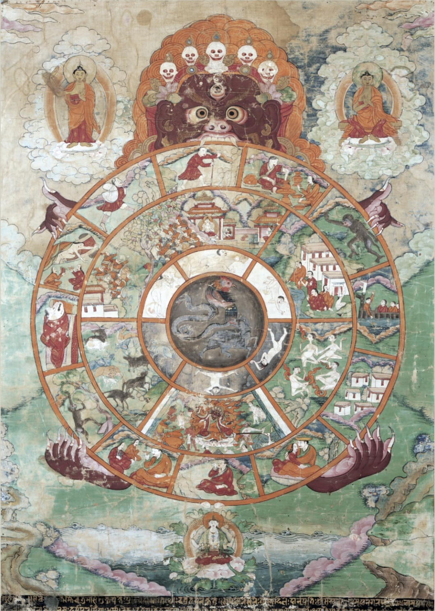
I dodici anelli
I dodici anelli sono enumerati ripetutamente nei canoni buddisti tradizionali, e, sebbene vi siano, naturalmente, variazioni, c’è una grande coerenza generale tra le presentazioni, di cui la seguente, dal Mahātaṇhasankhaya Sutta (Grande discorso sulla distruzione dell’attaccamento), è tipica:
Quindi, bhikkhu, con (1) l’ignoranza come condizione, (2) le formazioni [vengono ad essere]; con le formazioni come condizione, (3) coscienza; con la coscienza come condizione, (4) mentalità-materialità; con mentalità-materialità come condizione, (5) i sei sensi; con i sei sensi come condizione, (6) contatto; con il contatto come condizione, (7) sensazioni; con le sensazioni come condizione, (8) sete; con la sete (brama, desiderio) come condizione, (9) l’attaccamento; con l’attaccamento come condizione, (10) divenire; con il divenire come condizione, (11) nascita; con la nascita come condizione, (12) invecchiamento e morte, dolore, lamento, dolore, afflizione e disperazione si realizzano.
Il sutra descrive quindi i collegamenti in ordine inverso, operando dall’invecchiamento e dalla morte fino all’ignoranza, quindi passa a descrivere come, con la cessazione dell’ignoranza, le formazioni cessano; con la cessazione delle formazioni cessa la coscienza, e così via, fino al modo in cui la cessazione della nascita comporta la cessazione dell’invecchiamento e della morte, e quindi dolore, lamento, dolore, afflizione e disperazione – “tutta questa massa di sofferenza” – anche cessano. Per completare la presentazione, lo “scollegamento” dei dodici fattori è descritto in ordine inverso.
Nell’iconografia buddhista la pratītyasamutpāda è raffigurata con l’immagine della Ruota dell’esistenza.
Il bordo esterno della Ruota dell’esistenza è diviso in dodici sezioni, ciascuna contenente una piccola immagine. Queste immagini rappresentano i dodici anelli della catena della coproduzione condizionata. I dodici anelli possono essere visti come stadi nell’evoluzione del singolo essere umano (o di qualsiasi altro essere vivente), ma allo stesso tempo possono essere applicati ai nostri stati mentali, che continuamente sorgono, si sviluppano e scompaiono.
Nella Ruota dell’esistenza, la coproduzione condizionata è rappresentata da dodici cause disposte in modo da essere ognuna condizione del susseguente. Possiamo dunque far risalire le cause della sofferenza alle loro radici mediante i dodici anelli di questa catena. Tali anelli dovrebbero essere intesi come ciò che avviene dentro di noi in ogni momento così che, mentre attraversiamo questo ciclo, osserviamo anche la nascita, la vita e la morte dei nostri stati mentali.
I dodici anelli della Ruota dell’esistenza sono i seguenti.
La morte
L’immagine di un cadavere portato al luogo della cremazione. È l’intero processo di invecchiamento e decadimento, che in realtà inizia non appena nasciamo. Tutto il dolore, sia fisico che mentale, nasce da qualche aspetto di perdita, distruzione o decadimento, quindi questa immagine rappresenta tutte le sofferenze dell’esistenza.
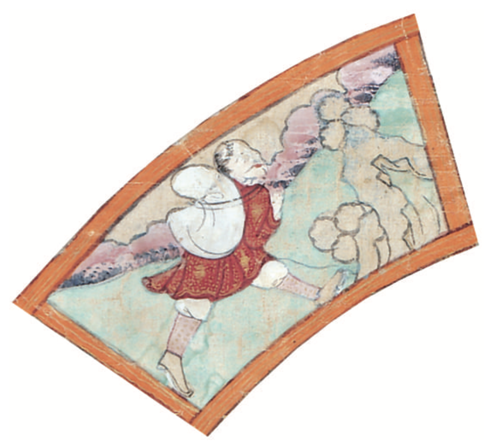
La nascita
L’immagine di una madre che dà alla luce un bambino. Sebbene questo anello della catena sia noto come nascita, non significa solo l’evento della nascita, ma la vita che è nata; abbraccia l’intera vita di quella particolare incarnazione. Può riferirsi alla nascita di un essere vivente, o all’apparizione fisica di qualcosa nel mondo esterno, oppure può essere interpretato come il sorgere di un pensiero o di uno stato d’animo nella mente.
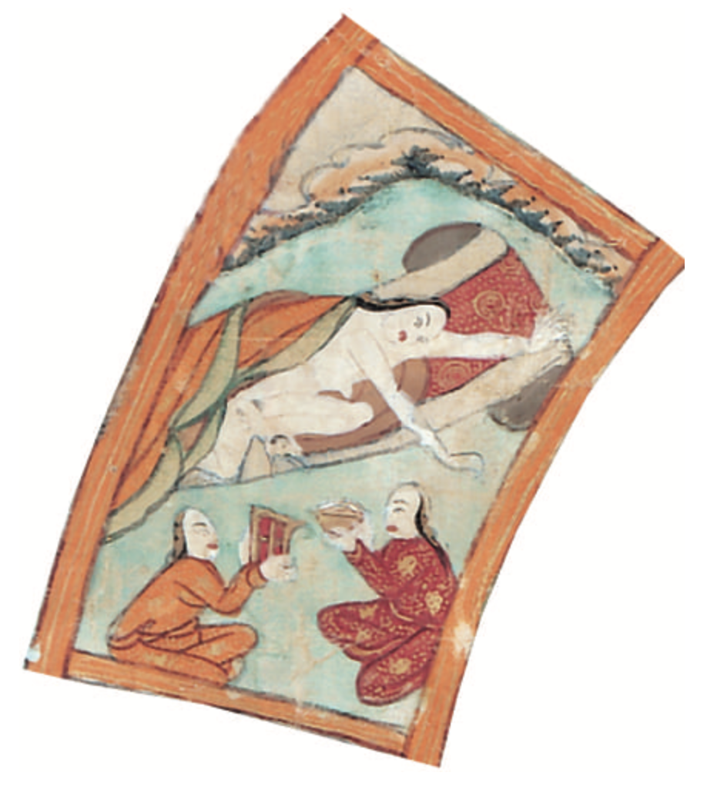
Il divenire
Il divenire (bhava) è talvolta raffigurato come una donna incinta e talvolta come l’unione sessuale di un uomo e una donna. Entrambe queste immagini suggeriscono il concepimento, l’inizio di una nuova vita. Esistenza significa essere nello stato di saṃsāra: esteriormente soggetto a nascita e morte, interiormente sotto l’influenza della nescienza e della confusione.
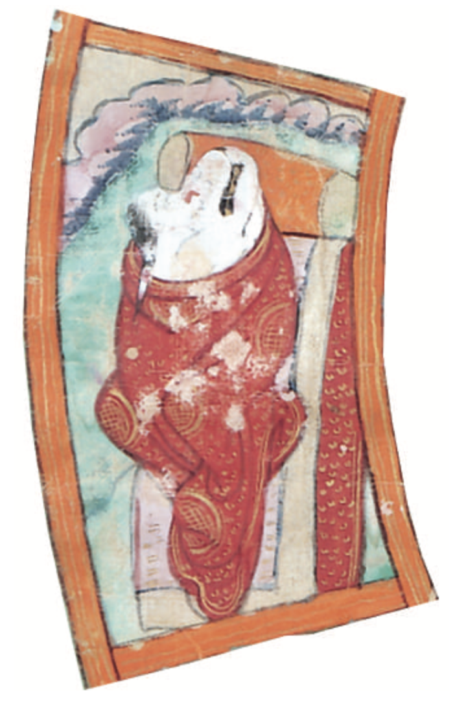
L’attaccamento
Perché sorgono gli stati d’animo? Quando cerchiamo la causa del divenire, la troviamo nell’attaccamento (upadana). L’attaccamento è simboleggiato da una figura che raccoglie frutti da un albero. Afferrare è l’opposto di dare e di lasciare andare.
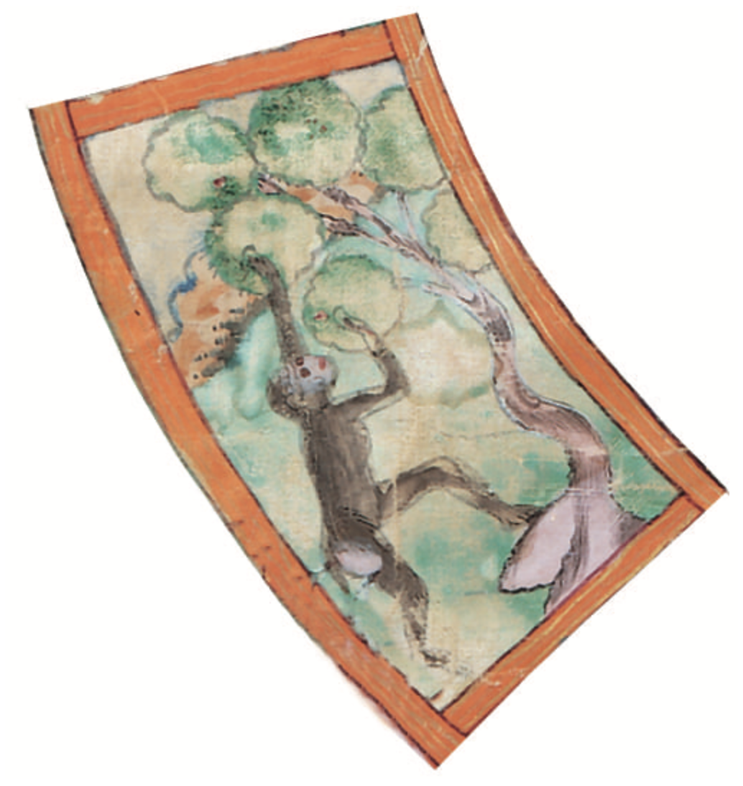
La sete
La sete (trsna) è raffigurata come una persona che beve o una persona cui viene offerto da bere. Questa è la sete di esistenza che ci fa aggrappare alla vita a tutti i costi. La sete non può mai essere soddisfatta: anche se beviamo fino a non riuscire più a bere, prima o poi tornerà. Questa sete, tradotta anche come desiderio o brama, è la causa della sofferenza. Non è la causa ultima, ma è la causa immediata e più ovvia.
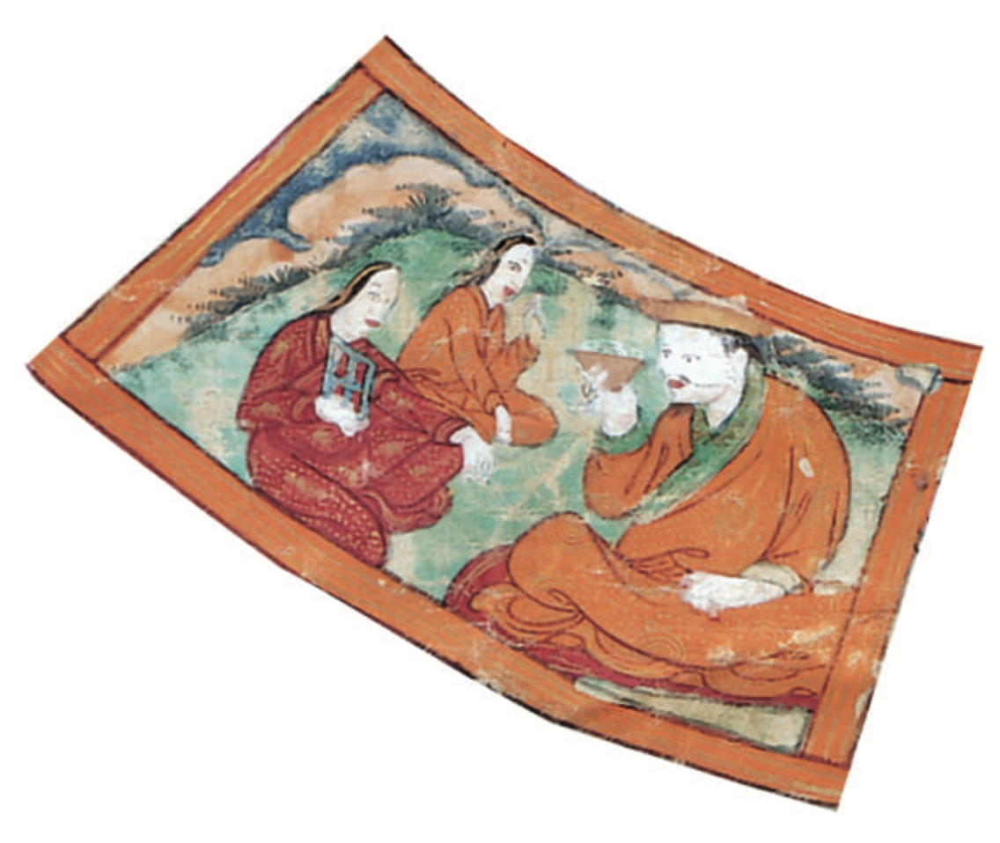
La sensazione
La sensazione (vedana) è simboleggiata da un uomo trafitto nell’occhio da una freccia. Questa immagine brutale ci ricorda che l’intera serie intende esprimere l’inevitabile sofferenza del saṃsāra. È interessante notare che la parola sanscrita per “sentire” può significare dolore, oltre che sensazione in generale. Questo indica che, nel saṃsāra, tutte le sensazioni di qualsiasi tipo sono essenzialmente dolorose, perché sono legate alla nostra falsa idea di sé.
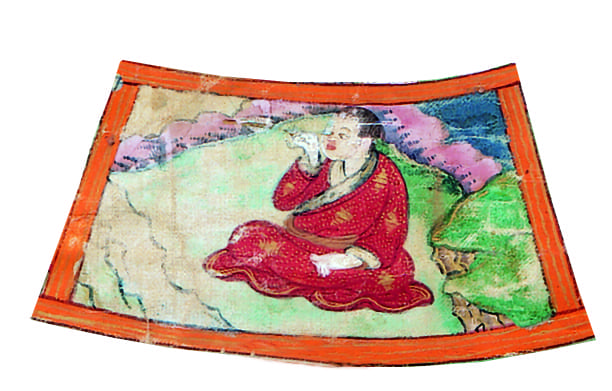
Il contatto
Il contatto (sparsa) tra i sensi e il loro oggetto, ovvero il dualismo soggetto/oggetto, è illustrato da un uomo e una donna che si abbracciano.
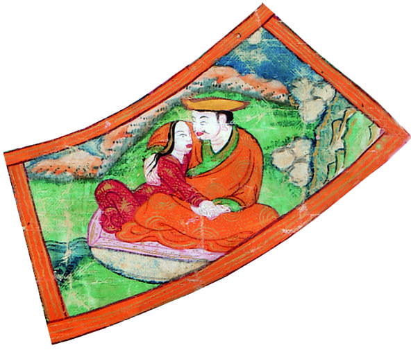
I sei sensi
Oltre ai soliti cinque sensi di vista, udito, tatto, gusto e olfatto, la funzione mentale è considerata il sesto senso. I sei sensi (sadayatana) sono raffigurati da una casa con sei finestre.
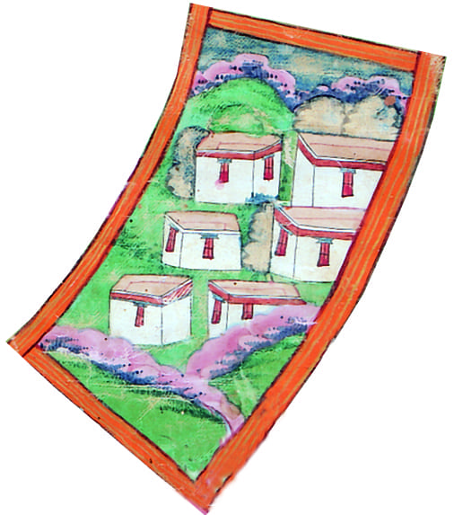
Nome e forma
Spiritualità-materialità – più spesso tradotti come nome-e-forma – equivale ai cinque aggregati che costituiscono una “persona”: forma, o materia, e sensazioni (o sentimenti), concezioni, formazioni mentali e coscienza. Gli aspetti fisici e non fisici dell’esistenza derivano entrambi dalla stessa causa e si riflettono a vicenda. Sono raffigurati da una barca piena di passeggeri.
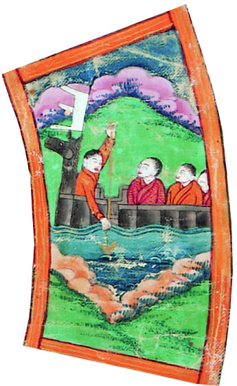
La coscienza
La coscienza (vijnana) funziona attraverso i sei sensi ed è appropriatamente raffigurata da una scimmia irrequieta e curiosa che salta da un oggetto all’altro, senza mai fermarsi.
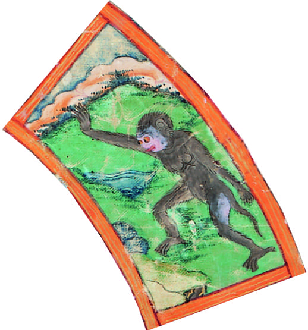
Le formazioni carmiche
Le formazioni karmiche (saṃskāra) sono simboleggiate da un vasaio che fa un vaso. Questo anello della catena raffigura la forza del karma che, in ogni momento e per ogni essere vivente, crea continuamente il mondo.
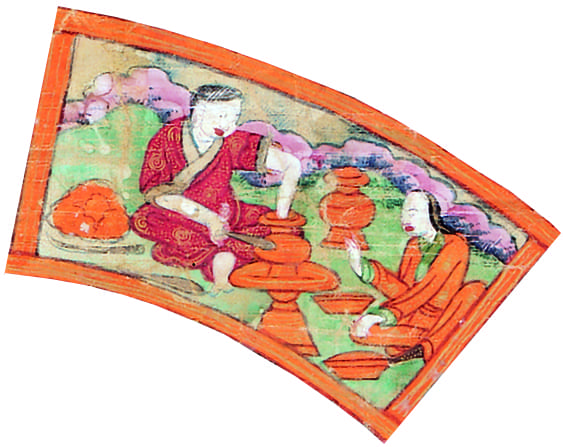
La nescienza
Da dove sorgono le formazioni mentali? Come inizia l’intero processo? Il Buddha fa risalire la causa principale alla nescienza, e questo è l’ultimo e anello della catena, che ne rappresenta anche l’inizio. La nescienza è simboleggiata da una vecchia cieca, che vacilla con l’aiuto di un bastone. Trungpa Rinpoche la chiamava una nonna cieca. La nescienza da vita a generazioni di esistenza samsarica, proliferando e riproducendosi all’infinito. La nescienza significa credere nell’esistenza di un sé separato e indipendente. Trungpa Rinpoche diceva anche che l’ignoranza è molto intelligente. In realtà è l’intelligenza del saṃsāra, che combatte una continua battaglia per la sopravvivenza e cerca costantemente il modo di mantenere la propria illusione, il proprio autoinganno.
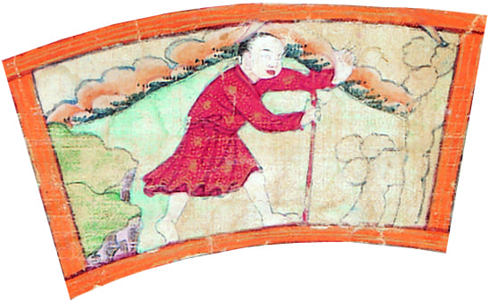
Il carma di retribuzione
Il “perché” del ciclo delle rinascite si trova nella nozione di karma: azioni del corpo, della parola e della mente (“proiezione del karma”) che possono essere virtuose o non virtuose, e i cui risultati (“maturazione del karma”) sono commisurati alla qualità delle azioni compiute. Questi risultati possono essere sperimentati immediatamente o più tardi nella vita presente, come quando qualcuno che ho insultato o mi insulta o si vendica contro di me in seguito, o in una vita futura, come quando rinasco all’inferno per aver commesso un omicidio, o in paradiso per avere compiuto atti di generosità. E proprio come le azioni che compio ora, quando le condizioni sono giuste, daranno frutti nel prossimo o lontano futuro, così le esperienze che ho ora risulteranno dalle azioni che ho compiuto in passato, sia in questa vita che in una vita precedente.
Sebbene i dodici anelli possano essere intesi come un ciclo che si svolge in una singola vita, o anche in un singolo momento, l’interpretazione di gran lunga più comune è di vederli come una spiegazione di come ha luogo la rinascita, quindi di un processo che si estende su due, tre o più vite.
Vale la pena menzionare due punti. In primo luogo, il Buddha insiste sul fatto che uno dei vantaggi di comprendere come funziona la Ruota dell’esistenza è che così facendo saremo liberi dall’ossessione di sapere se e come siamo esistiti in passato, se e come potremmo esistere in futuro e chi, precisamente, siamo nel presente, poiché una comprensione precisa della coproduzione condizionata fornisce una rispota a tutte queste domande. E in secondo luogo, come osserva Vasubandhu, sebbene la coproduzione condizionata, in generale e i dodici anelli, in particolare, siano “leggi” universalmente applicabili che sono “stabili ed eterne… dire che esiste un certo dharma eterno chiamato [coproduzione condizionata]… è inammissibile”. In questo senso, né l’origine dipendente né i dodici anelli esistono “essenzialmente” più di quanto non lo facciano altre entità o altri concetti. In altre parole, la coproduzione condizionata è essa stessa originata in modo dipendente.
I tre veleni
Al centro della Ruota dell’esistenza sono riportate le tre radici della sofferenza, dette “i tre veleni”. Esse sono raffigurate come un uccello o un gallo (attaccamento), un serpente (avversione) e un maiale (nescienza). I tre veleni inducono ad azioni che creano carma negativo.
La nostra vita è dominata da quello che viene chiamato “carma di retribuzione”, cioè il maturarsi di quello che è stato seminato. Questa maturazione è un esaurimento dell’impulso carmico corrispondente. Il carma, attuandosi nel frutto, viene eliminato, ma la nostra volontà è libera di creare nuovo carma: noi siamo liberi di scegliere quella o questa via. In questo ciclo, l’effetto del carma negativo si manifesta di nuovo come sofferenza, che a sua volta alimenta nuovi “veleni”. Il carma che si sviluppa da questi è sempre più negativo e il ciclo continua all’infinito.
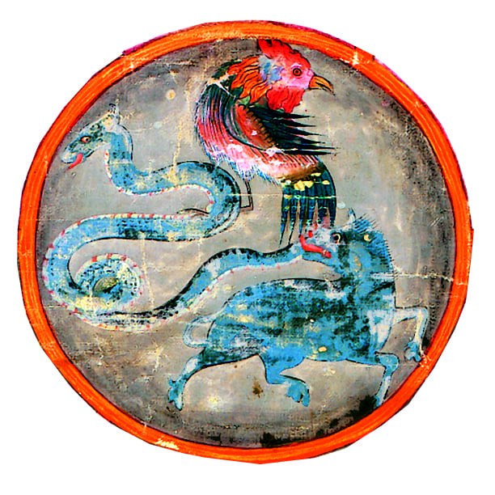
I sei regni dell’esistenza
All’interno del bordo esterno della Ruota dell’esistenza, che occupa la parte principale della ruota, sono illustrati i sei regni dell’esistenza nel saṃsāra:
- i mondi degli dei, Devas (il mondo degli dei è quello più piacevole tra i sei regni. Si ritiene che una rinascita in questo regno celeste derivi da un grande accumulo di karma positivo. Tuttavia, i piaceri di questo regno portano all’attaccamento, alla mancanza di attività spirituali e quindi alla mancanza del nirvana);
- i mondi degli dei gelosi, Asura (a causa delle loro passioni, la rinascita come Asura è considerata una delle quattro rinascite infelici, insieme alla rinascita come animale, preta o Naraka; lo stato di un Asura riflette lo stato mentale di un essere umano ossessionato dalla forza e dalla violenza, sempre alla ricerca di una scusa per litigare, arrabbiato con tutti e incapace di mantenere la calma o risolvere i problemi pacificamente);
- i mondi degli esseri umani, Manuṣya (una rinascita in questo regno è considerata fortunata perché offre l’opportunità di raggiungere il nirvana e porre fine al ciclo del Saṃsāra);
- i mondi degli animali, Tiryag (a simboleggiare un’esistenza guidata dall’impulso e dall’istinto, in cui gli esseri si depredano a vicenda e soffrono);
- i mondi dei fantasmi affamati, preta (a significare l’ingordigia del desiderio, l’attaccamento e la brama);
- i mondi degli esseri infernali, Naraka (a simboleggiare le conseguenze di un karma malvagio come assassinio, furto, menzogna, e altri).
Da un punto di vista “esteriore”, i sei regni descrivono tutte le possibili varietà di vita senziente. Sono tutte condizioni di vita in cui potremmo rinascere. Fatta eccezione per quelli degli animali e degli umani, gli altri regni ci sono invisibili, ma coesistono tutti con noi in un universo multidimensionale inconcepibilmente vasto. Da un punto di vista “interiore”, i sei regni sono una rappresentazione degli stati della mente.
Spostandosi ulteriormente verso il centro della ruota, la sezione successiva è divisa in due parti: una metà chiara in cui le figure umane salgono verso l’alto e una metà scura in cui cadono in basso.
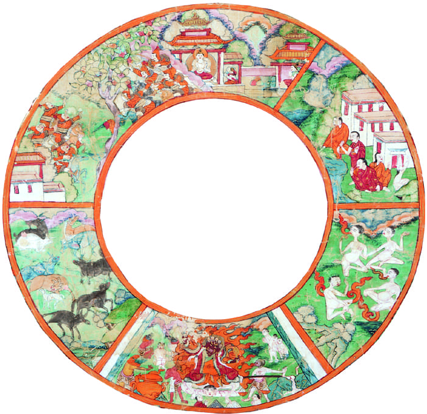
Il Bardo
Questa immagine rappresenta l’ultima fase del periodo tra la morte e la rinascita. Le figure che salgono, nel semicerchio luminoso, stanno per rinascere come esseri umani, divinità o divinità gelose; chi scende, nel semicerchio oscuro, rinascerà tra animali o fantasmi affamati o in uno degli inferni.
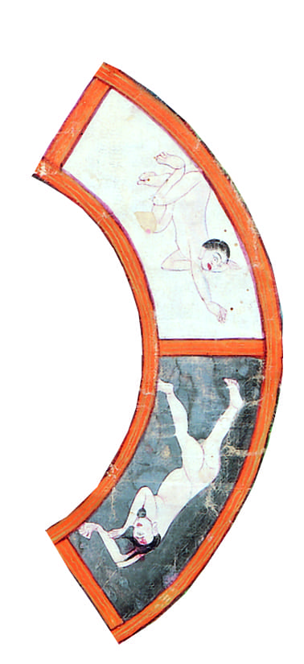
Yama
L’intera ruota è tenuta nelle mani di una figura terrificante che rappresenta l’impermanenza. Il Dalai Lama afferma:
L’essere feroce che tiene il volante simboleggia l’impermanenza, motivo per cui l’essere è un mostro irato … Una volta ho fatto disegnare un dipinto del genere con uno scheletro piuttosto che un mostro, per simboleggiare più chiaramente l’impermanenza.
Questa figura è Yama, il Signore della morte.
11.4 Gli antidoti
Le strategie per eliminare i kleśa seguono la logica degli “antidoti”: la tolleranza (kṣānti) è l’antidoto alla rabbia (dveṣa); il vigore è l’antidoto alla pigrizia; il disgusto per il corpo è l’antidoto alla lussuria (rāga).
La tolleranza
Approfondiamo qui il ruolo di kṣānti. Abbiamo già incontrato kṣānti quando abbiamo discusso il Vimalakīrti Sūtra. In quel contesto, kṣānti indicava
la tolleranza intuitiva dell’incomprensibilità ultima e della natura non-nata di tutte le cose
cioè, indicava la tolleranza alla sopportazione della realizzazione della vacuità, ovvero la capacità di accettare con fiducia e in maniera gioiosa l’esperienza dell’assenza di fondamento, dell’impermanenza e dell’assenza di sé. Ma kṣānti è anche la terza delle sei perfezioni, ovvero delle pratiche che fanno maturare la mente del bodhisattva. Kṣānti è anche tradotta come “pazienza”. A kṣānti è dedicato il sesto capitolo del Bodhicaryāvatāra e il nono capitolo dell’Antologia (Siksà-samuccaya) di Śāntideva.
Kṣānti nella Siksà-samuccaya
Nel nono capitolo del Siksà-samuccaya, Śāntideva si occupa di kṣānti quale antidoto al terzo veleno, ovvero l’avversione (odio o rabbia). Śāntideva scrive:
per liberarti dalle catene delle distorsioni karmiche, devi fare uno sforzo per eliminare le emozioni reattive. Sin dall’inizio, resisti con pazienza.
Coloro che non hanno studiato non conoscono né i metodi per sviluppare un’attenzione stabile, né i metodi per eliminare le emozioni reattive. Pertanto, instancabilmente cerca l’apprendimento [del Dharma].
Ma anche se sei ben informato, se la tua condotta è contaminata [dai kleśa] sarà difficile sviluppare un’attenzione stabile. Perciò, dimora in solitudine.
Chi ha un’attenzione stabile riceve come compenso l’eliminazione delle emozioni reattive. Per questa ragione, medita sull’impurità [del corpo].
La meditazione sull'impurità (Skt. aśubha-bhāvanā) è una classe di tecniche volte a minare il desiderio sessuale riflettendo e visualizzando sulle impurità associate al corpo.Queste, ci dice Śāntideva, sono le istruzioni per eliminare le emozioni reattive.
Segue poi una serie di citazioni da vari Sūtra.
Nel Ugraparipṛcchā Sūtra si afferma:
Il … bodhisattva … dovrebbe rimanere libero dall’attaccamento e dalla rabbia e dovrebbe mostrarsi indifferente alle otto preoccupazioni mondane. Se ottiene beni, moglie o figli, ricchezza, grano o proprietà, non deve diventare pomposo o euforico. Se non ottiene nessuno di questi, non deve dimostrarsi scoraggiato o depresso. Dovrebbe invece riflettere così: ‘Tutte le cose condizionate sono illusorie e hanno la caratteristica di essere delle costruzioni mentali. Pertanto, i genitori, i figli, la moglie, la servitù, … i dipendenti, gli amici, i compagni, i parenti e i membri della famiglia sono tutti manifestazioni delle evoluzioni del karma. Non sono miei e io non sono loro.’
Śāntideva si chiede come sia possibile evitare di rimanere vittime dell’infelicità. A tale domanda risponde:
Evita di avere una mente debole!
Nell’Ugraparipṛcchā Sūtra si dice:
[…] per distruggere tutte le emozioni reattive, sviluppa una mente che è difficile da sconfiggere; per non cadere preda dell’attaccamento, sviluppa mente che non può essere conquistata, una mente che non trema quando si confronta con la moltitudine degli esseri malevoli.
La pratica è il mezzo per ottenere questo risultato:
Nulla è difficile da ottenere con la ripetizione della pratica. Se con la ripetizione della pratica anche i più ignoranti […] evitano di venire sopraffatti dalla fatica, quanto più questo è vero se consideriamo quel lavoro i cui risultati corrispondono alla felicità dell’esistenza ciclica, alla felicità del bodhisattva e allo stadio più alto dell’assorbimento meditativo!
Mediante la ripetizione ti puoi convincere che la sofferenza degli altri ti renderà felice; ma allo stesso modo, generando abitualmente pensieri felici verso tutto ciò che causa sofferenza, puoi apprendere a dimorare in uno stato mentale felice. Questa pratica produce, quale risultato, lo stadio di assorbimento meditativo che è descritto nel Sutra dell’incontro del padre e del figlio:
Nell’assorbimento meditativo chiamato “Tutto è colmo di felicità” i bodhisattva provano solo sentimenti positivi verso tutto ciò di cui sono consapevoli, evitando qualunque sentimento di sofferenza o infelicità. Anche se provano le pene dell’inferno, pensano solo pensieri felici. Anche se subiscono tutte le sofferenze possibili della condizione umana – come farsi tagliare le mani, i piedi o il naso – pensano solo pensieri felici. Anche se vengono picchiati con dei bastoni o delle fruste, pensano solo pensieri felici. Anche se vengono gettati in prigione […] o se vengono ustionati dall’olio bollente, o se vengono dati alle fiamme come una lampada a olio, pensano solo pensieri felici. Anche se vengono offerti alla bocca di un demone o alla bocca di un leone […] o se vengono tagliati a pezzi […] o se vengono schiacciati dagli elefanti, pensano solo pensieri felici. Se gli vengono strappate le ossa, o se vengono impalati sui pali, o se vengno rapiti per essere uccisi, o se gli viene tagliata la testa, pensano solo pensieri felici; mai pensieri di sofferenza, né pensieri che non siano né felici né di sofferenza.
Perché questo? Tali bodhisattva, grandi esseri, hanno svolto questa pratica per molto tempo dopo aver pronunciato il seguente voto:
A tutti coloro che vogliono distruggermi, auguro di ottenere la felicità e la pace della tranquillità. A tutti coloro che possono proteggermi, trattarmi con rispetto, prendermi come loro maestro spirituale, onorarmi o farmi delle offerte, auguro di ottenere la felicità della tranquillità. E inoltre, a tutti coloro che mi maledicono, mi trattano male, mi picchiano, mi feriscono o in qualsiasi modo mi tolgono la vita, auguro di raggiungere la felicità del pieno Risveglio. Possano tutti risvegliarsi nel più alto, genuino e completo Risveglio.
I bodhisattva, con questi pensieri, con queste azioni, con questo voto, augurano in ogni occasione la felicità a tutti gli esseri senzienti. I bodhisattva esprimono spesso questo desiderio, meditano su di esso e certano ripetutamente di metterlo in pratica. Come risultato di questo pensiero e di queste azioni, raggiungono l’assorbimento meditativo chiamato ‘Tutto è colmo di felicità’. Nel momento in cui un bodhisattva raggiunge un tale assorbimento meditativo non può più essere distolto da esso e per sempre sfugge dalle azioni di Māra.
Questo tipo di sforzo messo in atto dai bodhisattva fortifica tutte le forme di rinuncia, rafforza ogni azione che è difficile compiere, stabilizza ogni forma di paziente sopportazione, consolida la perseveranza e potenzia la stabilità meditativa e la saggezza. Pertanto, sii sempre essere gioioso.
L’Akṣayamati Sūtra afferma:
Qual è la gioia più grande? È il piacere di ricordare le qualità del Buddha; la calma e la gioia d’animo; il non essere depressi; il non essere abbattuti; la libertà dal desiderio; la rinuncia alle delizie dei sensi; il provare piacere per il Dharma; la letizia della mente, l’agio del corpo; […] il non stancarsi mai di sentire parlare degli stati virtuosi; l’affidarsi agli insegnamenti che rivelano come stanno realmente le cose; […] l’avere sempre una mente libera dall’inimicizia; l’avere una forte motivazione; il cercare di sviluppare le qualità dei Buddha […] lo sforzo che ci allontana dalle Vie limitate; lo sforzo che ci allontana dall’avidità; il donare ai mendicanti; […] il deliziarsi della propria gentilezza verso coloro che sono immorali; la purezza della propria disciplina morale[…]; l’avere una mente che non si antagonizza di fronte all’inimicizia; il compiacersi della pazienza; la libertà dalla presunzione; la reverenza verso gli insegnanti spirituali; l’avere sempre una faccia sorridente; il non essere mai accigliato; la cortesia e la sincerità; l’assenza di ipocrisia; l’astenersi dall’adulazione; il non misurare i risultati raggiunti; avere aspirazioni pure; avere una mente senza durezza; […] la capacità di vedere il lato positivo di ogni cosa; la capacità di riconoscere la propria confusione; il non accusare gli altri dei loro limiti; il conformarsi alle regole del comportamento appropriato.
Il Mahā-megha Sutra fornisce una descrizione poetica, ci dice Śāntideva, dei bodhisattva che hanno raggiunto un alto grado di maturazione spirituale:
[Tali bodhisattva] hanno la disciplina di coloro che sono sempre assorbiti dal pensiero di andare all’inferno. Amano andare all’inferno. Diventano gli esperti dell’andare all’inferno. Desiderano l’inferno, sono avidi dell’inferno e sono ben familiari con il pensiero del fuoco infernale.
Questo conclude la spiegazione della resistenza paziente e dell’accettazione del dolore.
Queste metafore così estreme si potrebbero descrivere dicendo che il bodhisattva prende molto sul serio l’idea che il saṃsāra è il ciclo della sofferenza – e non può essere nient’altro, al di là dei brevi momenti in cui ci dimentichiamo di questo. In questo contesto, il bodhisattva manifesta gioia, perché rimanere nel saṃsāra è una sua scelta: ha scelto di rimanere nel saṃsāra per infiniti kalpa per contribuire alla salvezza degli esseri viventi. La sofferenza, in ogni istante, gli ricorda che la situazione in cui si trova è proprio la situazione che ha scelto di vivere. E di questo è felice.
Ma come il bodhisattva è in grado di mette in atto la sua paziente sopportazione? Śāntideva cita il Sāgaramati Sūtra:
Un bodhisattva, grande essere, quando tormentato, scosso, disturbato, minacciato o picchiato dagli altri […] o da divinità controllate da energie demoniache, o dai messaggeri di Māra, non vacilla mai davanti al desiderio di potere giungere alla completa conoscenza della realtà o dall’essere motivato da intenzioni superiori. Non esita a sviluppare mahakaruṇā per tutti gli esseri senzienti. […] Non esita dall’applicarsi a non possedere nulla. Non esita dall’aiutare tutti gli esseri senzienti a maturare ed evita di aggrapparsi alla propria felicità. Coerentemente con una virtù superiore, sopporta un trattamento sprezzante da parte degli altri; sopporta la mancanza di rispetto e la critica; sopportare la rabbia degli altri, i rimproveri e le cattive parole. Sopporta le ferite che gli altri gli infliggono. Sopporta il peso dei fardelli di tutti gli esseri senzienti. Non si stanca, non si avvilisce, non si deprime, non si dispera. Mostra forza e perseveranza. È coraggioso, è in grado di compiere lo sforzo più grande e tiene sotto controllo le infatuazioni mentali. Quando gli altri si rivolgono duramente nei suoi confronti, non risponde in modo aspro. Quando viene colpito, non reagisce colpendo gli altri. Quando gli altri si arrabbiano con lui, non si arrabbia a sua volta. Quando viene rimproverato, non rimprovera gli altri a sua volta. In questo modo indossa l’armatura della contentezza interiore.
Il mio commento potrebbe essere quello di dire che il bodhisattva è più forte di qualsiasi avversità e utilizza le difficoltà della vita samsarica quali occasioni per procedere sulla via dello sviluppo spirituale. Essendo tutte le cose
come un sogno, un’illusione, un’eco, un miraggio, un riflesso, un batter d’occhi; come l’imagine della luna sull’acqua, irreali, sempre insostanziali, sicuramente inesistenti, mendaci, (Bardo Thodol, traduzione di Giuseppe Tucci)
gli specifici dolori che proviamo e le specifiche malizie dirette verso di noi non devono costituire una sorpresa. Ci dobbiamo aspettare che tutto questo succeda. I dolori della vita sono le conseguenze della legge del duodecuplo nesso causale, il pratītyasamutpāda. Lo svolgimento della vita corrisponde ad un processo carmico: la vita è divenire, il divenire per presupposto è dolore. Non è utile concentrare la nostra attenzione sul singolo evento che provoca le nostre “emozioni afflittive”: non abbiamo modo per porvi rimedio. Più utile è invece dirigere il nostro pensiero verso la pratītyasamutpāda: è necessario infatti conoscere questo processo per provocarne l’arresto.
Śāntideva continua con un’altra citazione:
Rinunciare al corpo, non avere riguardo per il proprio corpo: questa è la perfezione della generosità. Quando il proprio corpo viene fatto a pezzi, [i bodhisattva] estendono la loro gentilezza amorevole a tutte le creature, senza lasciarsi trattenere dal dolore: questa è la perfezione della disciplina morale. Quando il loro corpo viene fatto a pezzi, [i bodhisattva] sopportano pazientemente tutto questo allo scopo di liberare coloro che li stanno ferendo, senza ferirli neppure nell’immaginazione: questa è la perfezione della pazienza. La perseveranza con cui non rinunciano alla motivazione di una completa conoscenza, con cui sostengono la loro forza interiore, con cui sopportano l’esistenza ciclica del saṃsāra, e con cui intraprendono azioni virtuose: questa è la perfezione della perseveranza. La qualità per cui, quando vengno feriti, si preoccunano solo del Risveglio e si rivolgono solo alla pace e alla tranquillità: questa è la perfezione di stabilità meditativa. La qualità per cui, quando i loro corpi vengono fatti a pezzi, [i bodhisattva] capiscono che il corpo è come qualsiasi altro oggetto, e tutti gli oggetti sono solo illusioni; capendo questo, [i bodhisattva] riflettono sulla natura illusoria del loro corpo e sull’impermanenza dell’essere, sulla sofferenza dell’essere, sull’assenza di qualsiasi sé nell’essere e sulla pace dell’essere: questa è la perfezione della saggezza.
Di nuovo, il mio commento è che, anziché rispondere in maniera “automatica” alle difficoltà – una senzazione di bruciore mi fa male e io “sono” questo dolore – il bodhisattva è in grado di trasformare la sua sofferenza in modo tale che un riflesso cieco diventi un’esperienza letta attraverso le lenti del Dharma. Il problema essenziale è il superamento del dolore, cioè l’arresto del carma: il fissarsi su eventi particolari (qualcuno mi ha fatto un torto: devo fargliela pagare) non serve a questo scopo, non influisce sull’arresto del carma; pertanto, non conviene dare troppa importanza alle vicende spicciole della vita quotidiana. La perfezione di kṣānti consente la trasformazione della sofferenza attraverso la pratica del Dharma. Anziché accettare i kleśa senza metterli in discussione, avendo reso “malleabile” la mente con la pratica meditativa, i bodhisattva diventano consapevoli che
le cose che sono nel mondo o che imaginiamo, tutte sono in realtà un’illusione; nulla di ciò che appare è reale; tutte le cose sono irreali, false e mendaci; non sono eterne e non durano. Che vale aver attaccamento per esse, che vale temerle? (Bardo Thodol, traduzione di Giuseppe Tucci)
Se siamo in grado di realizzare la vacuità, il dolore assume “un colore” diverso. Più tenue. Se crediamo a Śāntideva, esso sbiadisce fino a scomparire.
Riporto qui un divertente aneddoto. Andrés Gonzaléz della Holistic Life Foundation racconta la storia di Janaisa, una bambina di otto anni che faceva parte del doposcuola da lui gestito, una bambina che aveva una storia di litigi con i suoi coetanei. Ragazzi o ragazze, non importava, se la prendevano in giro, lei li metteva fuori combattimento. Ma poi successe qualcosa di particolare. Un giorno, in palestra, una ragazzina fa un’osservazione denigratoria su di lei e, come al solito, Janaisa l’afferra e la sbatte contro il muro. Ma questa volta, però, dopo averla guardata in silenzio per un po’, la lasciata andare, e le dice: “Sii felice che io medito”. Janaisa ha imparato che, se riusciamo ad espandere la nostra consapevolezza, possiamo anche permetterci di esperire le nostre emozioni, per quanto intense possano essere. Tuttavia, una consapevolezza aumentata ci offre una possibilità che prima non avevamo, ovvero quella di non reagire in maniera automatica. Questa libertà è il frutto della pratica di kṣānti.
11.5 Conclusione
Concluderei mettendo in evidenza l’aspetto seguente: c’è una componente eroica nel bodhisattva. Il bodhisattva è un guerriero. Non ha timore della sofferenza perché, senza la sofferenza, non potrebbe esistere. L’assenza di sofferenza nega il saṃsāra; e il bodhisattva può esistere solo nel saṃsāra. Più grande è la sofferenza, maggiore è la sua ragione d’essere. Per questo, il bodhisattva non prova paura. Nel Bodhicaryāvatāra il coraggio del bodhisattva è descritto nel modo seguente:
VI:17-18. Vi sono alcuni che vedendo colare il proprio sangue, moltiplicano di coraggio; vi sono altri che, vedendo il sangue altrui, vengono meno. Tutto questo proviene dalla fermezza e dalla debolezza della mente. Vedi perciò di essere un difficile avversario per la sofferenza, sì da sopraffarla.
Il dolore provato dal bodhisattva non fa altro che aumentare il suo coraggio e la sua motivazione.